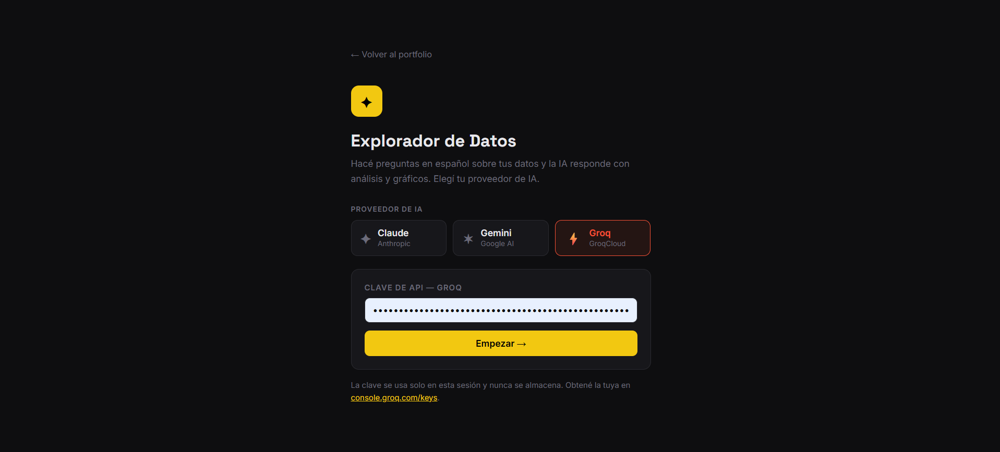
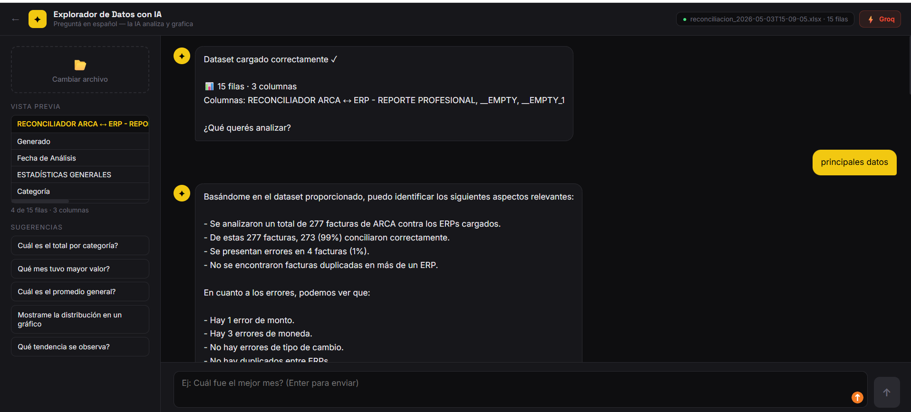
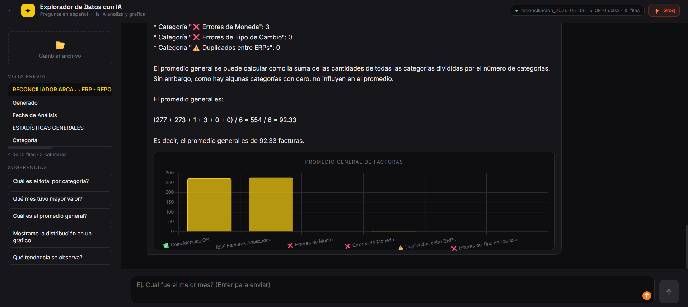
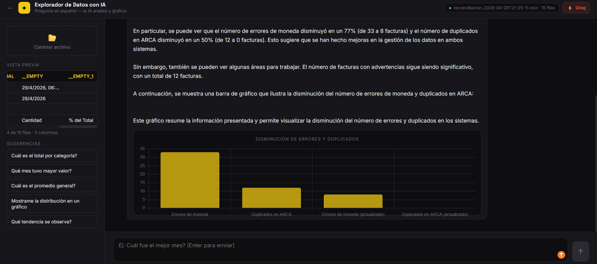

Descripción del Proyecto
Aplicación de análisis de datos en lenguaje natural. El usuario carga un archivo CSV o Excel y conversa con la IA para hacer preguntas sobre el dataset directamente en español, sin necesidad de escribir fórmulas ni código. Según la pregunta, la IA responde con texto y, cuando corresponde, genera automáticamente un gráfico (barras, líneas o torta) para visualizar el resultado.
Herramientas Utilizadas
- React 18 (Babel Standalone)
- Claude API (claude-sonnet-4-6)
- Chart.js
- PapaParse (CSV)
- SheetJS (Excel)
Impacto
Reduce la barrera técnica para explorar datos: cualquier persona, sin conocimientos de Power BI o fórmulas, puede subir su información y obtener respuestas y gráficos en segundos, acortando el camino entre datos crudos y decisiones.